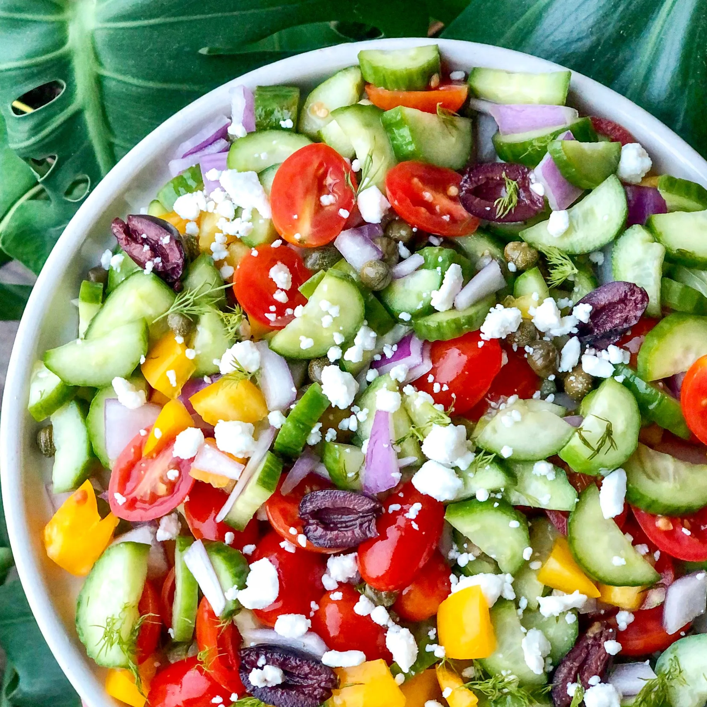

Odin Recipes
Lettuce-less Salad Recipes
Sometimes eating salads with lettuce can be repetitive. You want to
have a healthy and veggie-full meal, but are tired of always using lettuce
as your base. These three salads elevate your salad game and are filling,
delicious and colorful!
